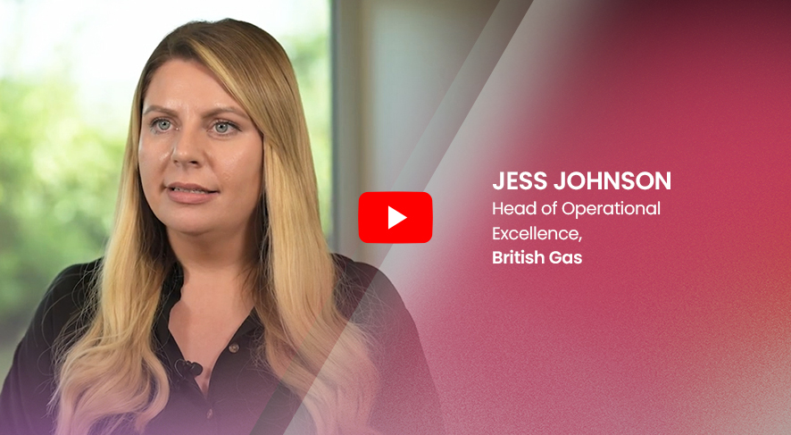

Smarter by Design
Jess Johnson, Head of Operational Excellence at British Gas, shares how WNS' expertise in energy utilities and innovation helped drive high service levels, improve NPS and ensure continuity even through turbulence.
Read More ↗